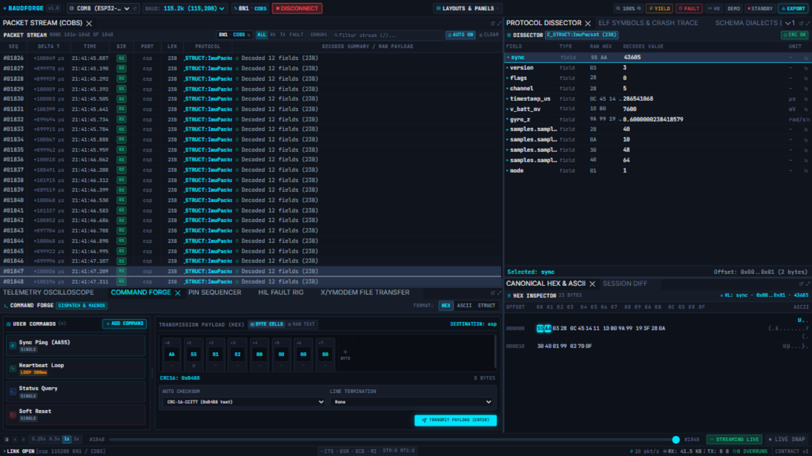
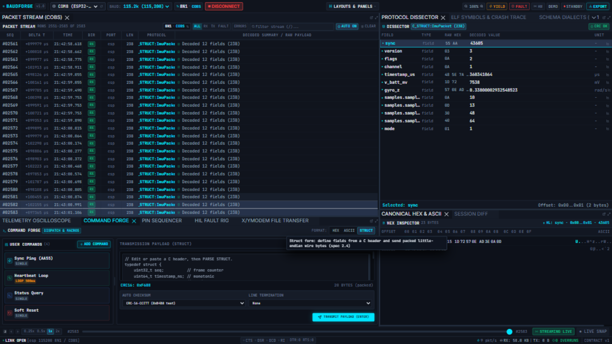

Command Forge
The Command Forge composes and transmits frames to your device: raw hex byte-cells, ASCII text with line termination, or packed C-structs — with an auto-checksum appended and real feedback on what actually left.

Destination
The DESTINATION badge (top right of the panel) shows the port your frame will go to — the workbench's selected port (esp in the screenshot). Change it from the ribbon's port selector.
Format: HEX
- BYTE CELLS — one editable cell per byte,
+ BYTEappends. Values are hex (AA 55 01 02 …). - RAW TEXT — type hex with spaces or commas:
6D 6F 64 65 20 69 6D 75 0A. - The B BYTES counter shows the payload size as you type.
Format: ASCII
Switch the FORMAT to ASCII, type text, and pick a LINE TERMINATION: None, CR (\r), LF (\n), CRLF, or NULL (\0) — the terminator is appended exactly like a real console would.
Format: STRUCT
Define fields from a C header and send packed little-endian wire bytes:

- Paste or edit a C
typedef structin the editor. - The panel parses it into editable field rows (ints, fixed-width, enums) with per-field inputs.
- The packed wire preview shows the resulting bytes;
N BYTES (packed)confirms the size. - Pointers, bitfields and unknown types are reported as errors — never silently skipped.
Auto checksum
AUTO CHECKSUM appends a checksum to the wire payload on transmit:
| Algorithm | Bytes | Notes |
|---|---|---|
CRC-16/CCITT-FALSE |
2 | poly 0x1021, init 0xFFFF (the common "modbus test" value 0xB4B8 for 123456789) |
CRC-16/MODBUS |
2 | poly 0x8005 reflected |
CRC-32C |
4 | Castagnoli, as used by COBS+CRC32C links |
none |
0 | no append |
The checksum covers the payload bytes and is appended in the wire byte order of the algorithm.
Transmitting
Press TRANSMIT PAYLOAD (ENTER) (or Enter in any cell). Without a live engine session the button reads TRANSMIT PAYLOAD (NO LINK) — you can still compose and checksum a frame, and the attempt is reported honestly:
- The engine sends the bytes on the destination port; the send outcome (
sent, faulted bytes, dropped) comes back from the wire. - A
TXrow appears in the Packet Stream with the exact wire hex. - If the engine refused the send (wrong port, offline), you get an error toast with the engine's actual reason, and the row is marked [NOT SENT: …] with error styling — bytes that never left are never counted as TX.
User commands & macros
- ADD COMMAND saves the current payload as a one-click button (e.g.
Sync Ping (AA55)). - A command can be SINGLE (one shot per click) or LOOP 500ms (periodic — the badge shows the cadence; click again to stop).
- Commands persist per browser so your rig's button set survives a reload.
Pacing
For flow-controlled devices, a paced send splits the payload into chunks with a delay (pace_ms) — the engine paces the transmission so slow bootloaders can keep up.
Tips
- The CRC badge (
CRC16: 0xB4B8in the screenshot) previews the checksum that will be appended before you transmit. - Undecided what to send? The device's own decoded rows tell you what it expects — the Protocol Dissector shows the wire order of every field.